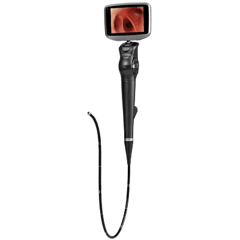
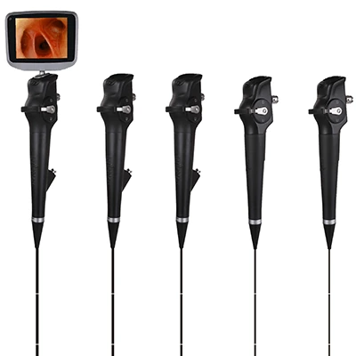
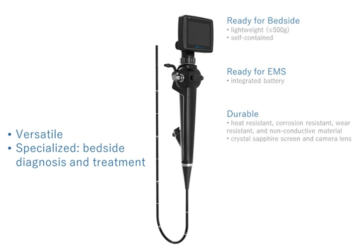
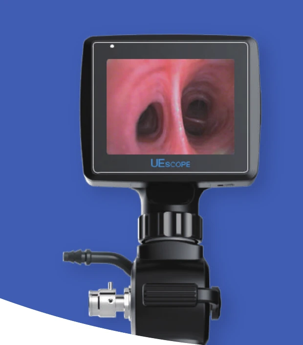
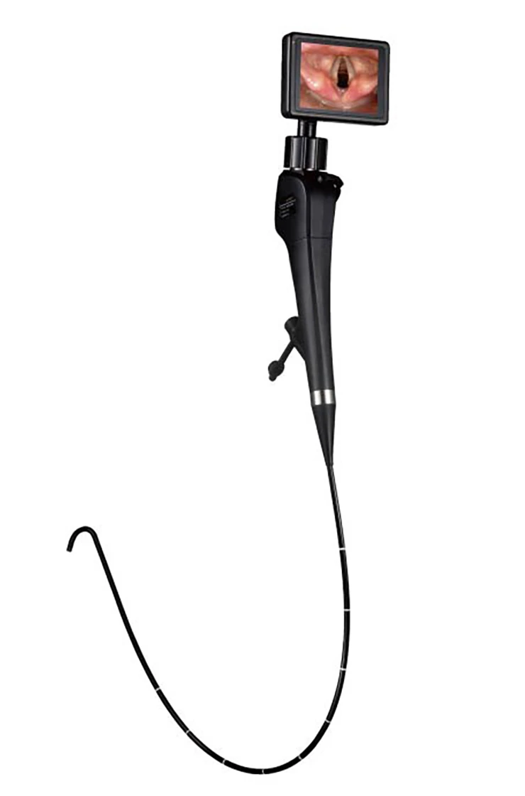
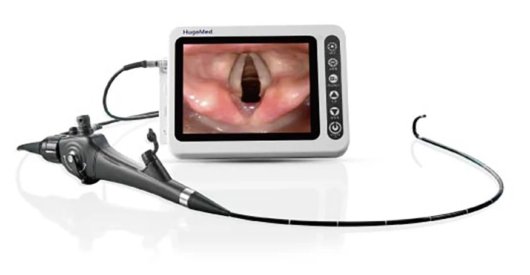
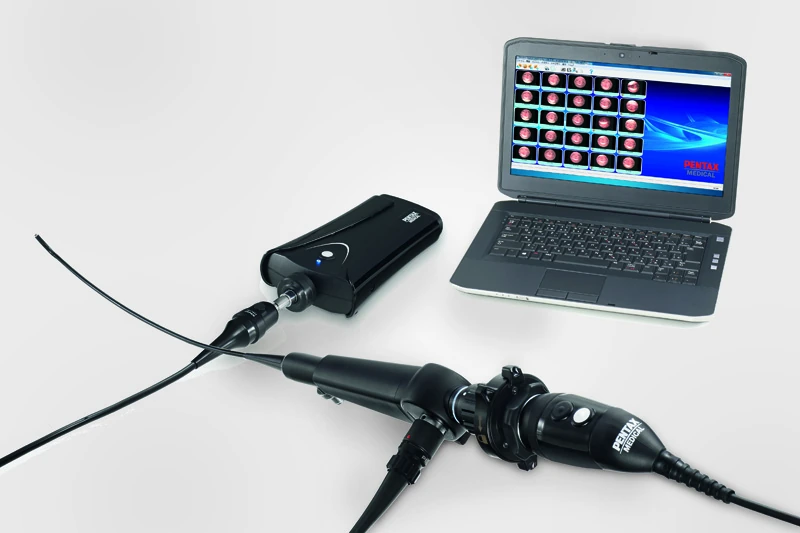
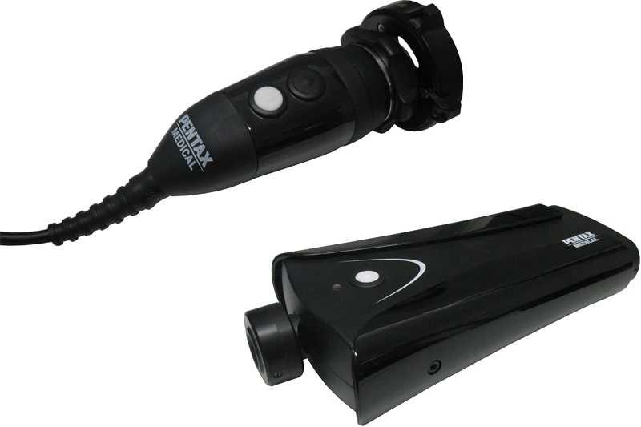
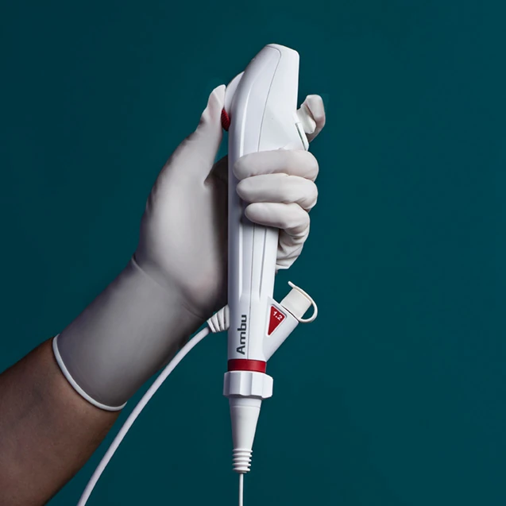
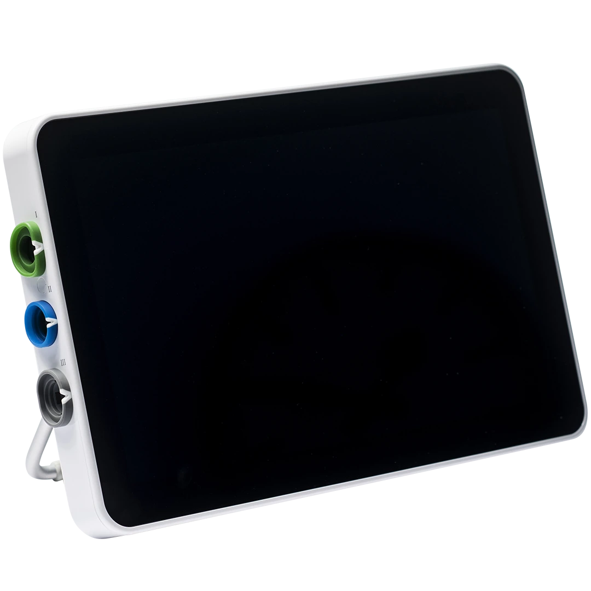

5_Bronchoscope 조사 · 구매 검토자료2026. 10. 1. 기준 · 웹 확장 개정안
소형·휴대형 기관지경 구매 검토보고
마취과 기관내삽관 및 ANKOR 33Fr DLT 위치 확인용
- 우선 후보 3종: Insighters iS3-F2(중국), UE Medical TIC-SD-I(중국), HugeMed VL3S-M28＋VL3SU(중국).
- 2순위 2종: PENTAX FI-7RBS(일본), Ambu aScope 5 Broncho UltraSlim 2.7/1.2(덴마크).
우선 1Insighters iS3-F2 (중국)2.8 mm · 3.5인치모델 상세 ›우선 2UE Medical TIC-SD-I (중국)2.8 mm · 3인치모델 상세 ›우선 3HugeMed VL3S-M28 (중국)2.8 mm · 3.5인치모델 상세 ›2순위 1PENTAX FI-7RBS (일본)최대 3.05 mm · USB 영상 옵션모델 상세 ›2순위 2Ambu aScope 5 UltraSlim (덴마크)최대 3.2 mm · 12.8인치모델 상세 ›
1. 검토 기준 및 현재 장비
- 기준 장비: KARL STORZ 11301ABXK(독일), 외경 2.85 mm·삽입 길이 51.5 cm.
- 현재 조합: 8404YA Rolling Stand＋8404ZXK 8인치 모니터.
- 연결 체계: FIVE → C-MAC HD 모니터 직접 연결. 8403ZXK도 C-MAC 계열이나 병원 사용 이력 없음.[1]
2. ANKOR 33·35·37Fr: 추정값과 제조사 지침
가. 33Fr 추정 및 적용 기준
- 자료 성격: 최대 통과 강구의 평균을 내경 근사 지표로 사용. ANKOR 실측 내경은 아님; 시험 상한 4.5 mm.
- 표기 주의: DLT는 비원형.
| 크기 | Bronchial (mm) | Tracheal (mm) | 산출 방식 |
|---|---|---|---|
| 33Fr, 추정 | 3.75 ≈3.8 | 3.45 ≈3.5 | 35·37Fr 평균 선형 외삽 |
| 35Fr | 4.00 | 3.85 ≈3.9 | 5개사 × 2로트 평균 |
| 37Fr | 4.25 ≈4.3 | 4.25 ≈4.3 | 5개사 × 2로트 평균 |
나. DLT 참고 계산 원자료
| 제품 | 35Fr B | 35Fr T | 37Fr B | 37Fr T |
|---|---|---|---|---|
| Bronch-Cath | 4.0, 4.0 | 4.0, 4.0 | 4.5, 4.0 | 4.5, 4.5 |
| BlueLine | 3.5, 4.0 | 4.0, 4.0 | 4.0, 4.0 | 4.0, 4.0 |
| Bronchopart | 3.5, 4.0 | 3.0, 3.5* | 4.0, 4.0 | 4.0, 4.0 |
| SHER-I-BRONCH | 4.5, 4.5 | 4.0, 4.0 | 4.5, 4.5 | 4.5, 4.0 |
| Coopdech | 4.0, 4.0 | 4.0, 4.0 | 4.5, 4.5 | 4.5, 4.5 |
단위 mm. B=bronchial, T=tracheal. 쉼표는 서로 다른 2로트. *3.5 mm는 두 번째 시도에서 통과. 원문 Table 2.[2]
3. 우선 검토 후보 3종
| 제품·대표 사진 | 규격·모니터·흡인 | 국내 상태·장단점 |
|---|---|---|
우선 1 · 국내 허가·임상 사용 Insighters iS3-F2 (중국)   |
| |
우선 2 · 국내 허가·제품 소개 UE Medical TIC-SD-I (중국)   |
| |
우선 3 · 국내 공급 미확인 HugeMed VL3S-M28 ＋VL3SU (중국)   |
|
4. 2순위 후보 2종
| 제품·대표 사진 | 규격·모니터·흡인 | 국내 상태·장단점 |
|---|---|---|
2순위 1 · 국내 허가 확인 PENTAX FI-7RBS (일본)   | ||
2순위 2 · 일회용 / 국내 정확 모델 미확인 Ambu aScope 5 Broncho UltraSlim 2.7/1.2 (덴마크)   |
5. 일회용 제품 동향 및 구매 판단
가. 제품 구조·주요 동향
- 일회용 scope＋계속 사용하는 모니터가 일반적 구성. 모니터가 비품이어도 scope가 비품인 것은 아님.
Ambu aScope 5 UltraSlim (덴마크)
Vathin H-SteriScope Zero / Slim (중국)
나. 마취과·응급실·중환자실 활용
다. 병원 구매 판단
- 판정: 보조 도입 검토 가치 있음.
- 국내 단가 미확보로 경제성 우열은 미판정.
- ANKOR 33Fr 주 장비 대체 여부는 별도.
6. 검토 후 기각한 제품들
| 제조사·모델 (국가) | 규격·영상 구성 | 보류·제외 사유 |
|---|---|---|
| NeoScope NFB9 (미국) |
|
|
| Verathon BFlex 2 Ultraslim 2.8 (미국) |
| |
| Machida BP10-2555B (일본) |
| |
| Insighters iS3-F2S (중국) |
|
|
| HugeMed VL3S-M30 (중국) |
| |
| UE Medical PL-F260 / PL-F320 (중국) |
| |
| PENTAX FI-9RBS / FI-10RBS (일본) |
|
- 분류 정정: NeoScope NFB9(미국)·Verathon BFlex 2(미국)·Machida BP10-2555B(일본)는 제조사상 기관지경. 후보 제외 요청은 반영하되 “기관지경이 아님”으로 기록하지 않음.
- HugeMed BR-M25(중국): 요청에 따라 구매 후보에서 삭제. 국내 BR 계열 허가를 VL3S 허가로 확장하지 않음.[5]
7. 국내 허가·유통사 및 연락처
- 국내 확인: 정상 품목 기록·국내 판매 소개·실제 사용 근거 중 확인된 범위만 표시.
- 미확인 ≠ 미수입
식약처 알기쉬운의료기기 검색
보고서에 등장하는 품목의 허가·업체 정보를 검색·조회할 때 우선 확인할 공식 출처.
https://emedi.mfds.go.kr/search/data/MNU20237
보고서에 등장하는 품목의 허가·업체 정보를 검색·조회할 때 우선 확인할 공식 출처.
https://emedi.mfds.go.kr/search/data/MNU20237
| 제조사 (국가) / 국내 주체 | 확인 품목번호·조회 상태 | 연락처·홈페이지 |
|---|---|---|
Insighters (중국)
|
|
|
UE Medical (중국)
|
|
|
PENTAX Medical (일본)
|
| |
HugeMed (중국)
|
|
|
Vathin (중국)
|
|
|
Ambu (덴마크)
|
|
|
HugeMed 추가 조사 결과
8. 참고문헌 및 소스
조회 기준: 2026. 10. 1. 제목을 누르면 원문 이동. 제품 사진의 저작권은 각 제조사·제공자에 있음.
- KARL STORZ. C-MAC® System. AN 9 6.0, 08/2022. 사용자 제공 카탈로그. 인쇄 10쪽 FIVE, 16쪽 모니터, 22쪽 11301ABXK, 29쪽 스탠드.
- Wajima Z, et al. Comparisons of the segments of left-sided double-lumen tracheobronchial tubes as industrial products. BMC Anesthesiol. 2022;22:177. Table 2, 35·37Fr 각 2로트의 강구 통과 시험.
- Insung Medical / Flexicare. VentiBronc Anchor Endobronchial Tube — Instructions for Use, USA. 07/2024.
- Kim N, Oh YJ, Kim HJ, Lee K. Novel Triple-Cuff versus Conventional Double-Cuff Double-Lumen Endobronchial Tube in Patients with Risk Factors for Tube Misdirection. Yonsei Med J. 2025;66:866–873. doi:10.3349/ymj.2025.0060.
- 식품의약품안전처. 의료기기 공개 품목·모델 검색. 2026-10-01 모델명·제조자·허가번호 직접 조회. 검색·상세 응답 별도 보존.
- Insighters. Service Manual of Video Flexible Laryngoscope, iS3-F. August 2021, Ver 2.0. 제조사 명의 매뉴얼의 Scribd 게시본, 사양 4–5쪽.
- Insighters. Visual Airway Management Solution / i-Scopes. 현행 제조사 제품군. 2.8 mm 무채널형.
- Insighters. Visual Airway Management Solution — F 계열 대표 사진. 사진의 세부 모델 미표기.
- СПЕКТР медицина. iS3-F2S от Insighters. 러시아 유통 페이지: F2S 2.4 mm, 360 mm. 국내 F2와 구분.
- Insighters / Stormoff. Видеоларингоскопы INSIGHTERS. 2026. 4쪽: 러시아판 F2 2.4/600 mm, F2S 2.4/360 mm. 국내 자료와 판본 구분.
- UE Medical. TIC Series UESCOPE Flexible Videoscope. 제조사 브로셔 유통사 게시본. 문서 발행연도 미기재, 2–4쪽.
- 친우메드. UESCOPE TIC Flexible Videoscope. 국내 사양·연락처·대표 사진. HTTP 원문 확인.
- UE Medical. Product Catalog. V.02/2022. PDF 24–25쪽, 인쇄 21–22쪽. URL의 2024와 문서 판본 구분.
- UE Medical. Classic Flexible Videoscope TIC. 현행 제조사 제품 페이지.
- HugeMed. VL3S — Flexible Airway Management. 현행 제품·사진·모니터 연결 구성.
- HugeMed. VL3S Technical Specification Table. 현행 이미지 표 직접 확인: M28 2.8/0/650 mm, M30 3.0/1.2/650 mm.
- PENTAX Medical. Fiber Intubation Endoscope FI-7RBS. 제조사 웹 카탈로그. 2.4 mm, 600 mm, 300 g.
- PMDA. ペンタックス挿管用ファイバースコープ 添付文書. 第14版, 2023-12. FI-7/9/10 최대 외경 3.05/3.75/4.15 mm.
- PENTAX Medical. USB Camera Kit. 08/2014. 제조사 브로셔 게시본. 연결 예시 사진 1쪽; 카메라 210 g, LED 광원 320 g.
- Ambu. aScope 5 Broncho — Product and Downloads.
- Ambu. aScope 5 Broncho 2.7/1.2 & 4.2/2.2 — Instructions for Use. V4, 2025/09. 성인 대상, 삽관 적응증, 최대 외경 3.2 mm, 일회용.
- Ambu. aScope 5 Broncho 2.7/1.2 — Datasheet. V02, 2024/04. UltraSlim·aView 사진 원본. 일반 DLT 32Fr 표기는 이 판본에 한정.
- Ambu. aView 2 Advance. 12.8인치, 331×215×52 mm, 2.7 kg.
- 와이비메디칼. H-SteriScope — Human. 국내 제품 소개·연락처.
- FDA. K250232 — Vathin H-SteriScope. 2025. 제조사 제출 치수 자료.
- Vathin. H-SteriScope Product Brochure. DVM-B1/B2 12.1인치.
- Verathon. BFlex 2 with GlideScope Video Monitor — Operations & Maintenance Manual. 0900-5210, Rev 01. Ultraslim 최대 3.3 mm; GVM 6.4인치, 1.0 kg.
- NeoScope. Product Ordering Guidelines. Bronchoscopes 항목 NFB9, 9Fr 외경·3.6Fr 채널, 영상 구성.
- Machida. BP10-2555B — Cordless Bronchoscope. C-mount 선택품 명시.
- PMDA. Machida BP10-2555B 添付文書. 第8版, 2025-10. 최대 삽입부 2.9 mm.
- Machida. MVH-720 — Video Camera. HDMI·DVI·HD-SDI, 본체 350×104×243 mm·4.5 kg.
- Boston Scientific. EXALT Model B Single-Use Bronchoscope. Slim 삽입관 3.8 mm: 이번 외경 기준 밖.
- TSC Life. Broncoflex User Manual. 10030531-C, 2026-01. Agile 삽입관 3.6 mm·선단 3.9 mm: 이번 외경 기준 밖.
- UE Medical. PL-F Flexible Videoscope — 중문 제품 페이지.
- 더블유에스아이. 회사·호흡기 제품·Contact Us. HugeMed 협력·대표전화; 공개 제품은 일회용 기관지경·MS-8.
- PENTAX Medical. Contact Us — Korea Branch. 02-6925-0670, inquiryKOREA@pentaxmedical.com.
- Ambu. Local Distributors — South Korea, UPINEMED. 070-1895-1282, oliviajh@kcpmed.com. 개별 제품 공급 범위와 구분.
- 서울 열린데이터광장. 성북구 의료기기판매(임대)업 인허가 정보. 영인헬스케어 과거 사업장 등록 자료. 연락처·주소는 이번 개정에서 제공된 최신 정보 반영.
- 행정안전부. 2025 행정업무운영 편람. 보고서 제목·작성일·번호·본문 구분 등 서식 참고.
- Ambu. Bronchoscopy Solution for ICU. 제품군별 기도 관찰·BAL·흡인·기관절개술 보조 용도.
- Ambu. aScope 4 Broncho Slim — Datasheet. 일회용 제품군의 DLT·bronchial blocker 활용 참고; 이번 외경 후보와 별개.
- 유파인메드. Contact. 회사 홈페이지·대표 연락 경로.
- 제조사·국내 유통사. 제품 사진 및 사양 그림 원문 목록. 17개 이미지의 출처 URL·제목·모델 식별 여부.